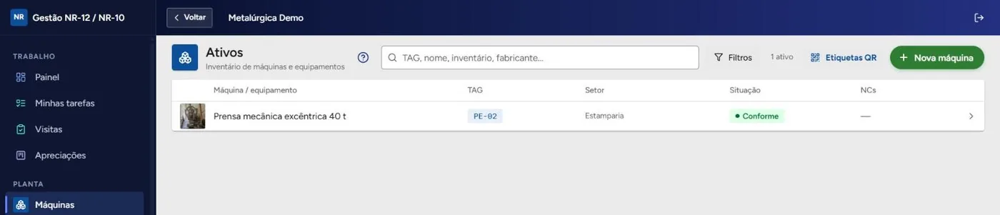
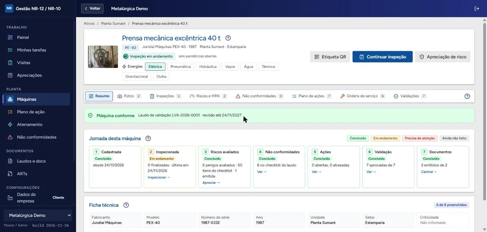
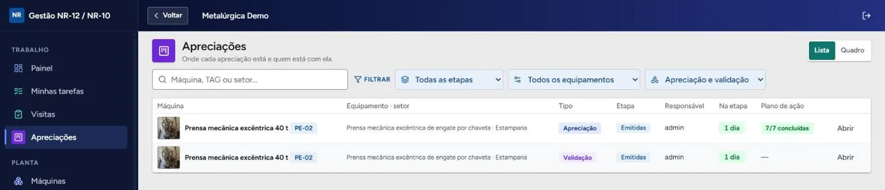
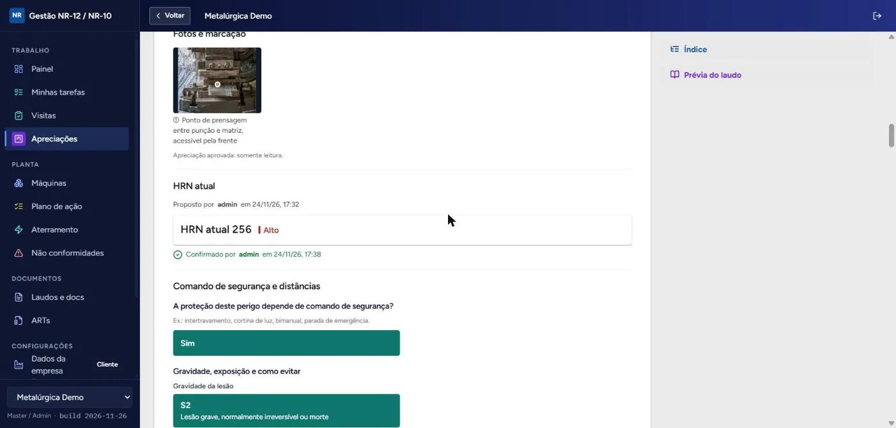
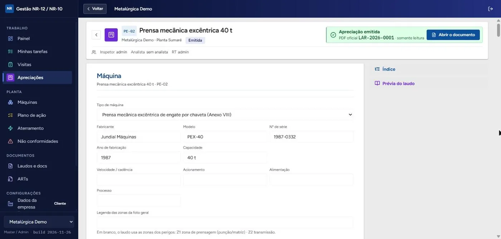
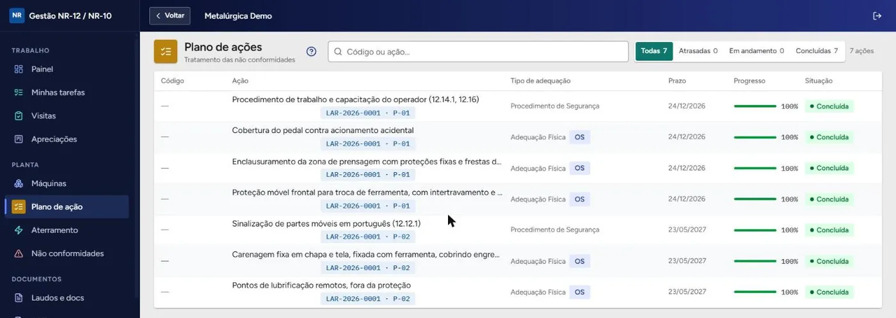
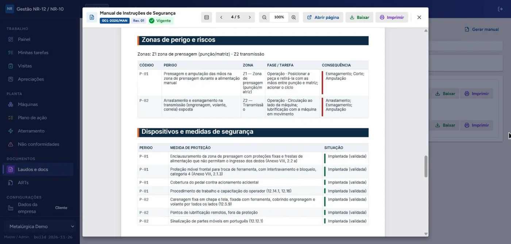
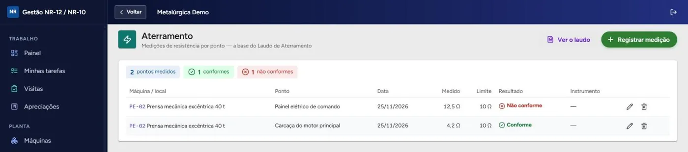
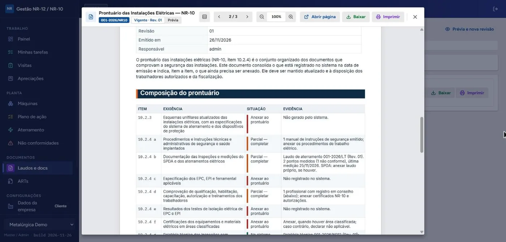
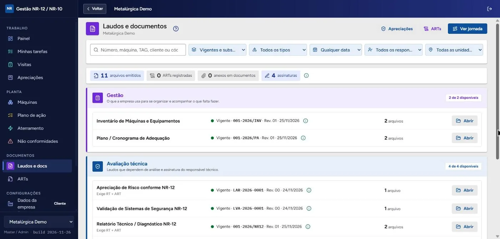

🎯 Para que serve o sistema
A NR-12 obriga a empresa a ter máquinas seguras — e a provar isso com documento. A NR-10 faz o mesmo com a parte elétrica. O fiscal, o auditor ou o cliente não veem a máquina segura: veem os papéis. O Sistema NR12 organiza esse trabalho em etapas e gera, em cada uma, o documento que comprova o que foi feito.
Todo documento sai com número oficial, revisão, data e código de validação — quem recebe o PDF consegue conferir na internet se ele é autêntico. E nenhum número é digitado à mão no documento: tudo vem do que foi registrado no sistema.
💡 Regra de ouro: os laudos não são avulsos. Cada um corresponde a um momento do trabalho e usa o que foi feito no momento anterior. Siga a ordem abaixo e os documentos se completam sozinhos.
🗺️ O caminho de uma máquina — visão geral
Usando como exemplo uma prensa mecânica, a história completa é esta:
Role para o lado para ver a tabela inteira
| Etapa | O que você faz | Documento gerado |
|---|---|---|
| 1. 📋 Cadastrar | Cadastra a prensa e as demais máquinas | Inventário de Máquinas |
| 2. 🔍 Avaliar | Fotografa, registra os perigos e o sistema calcula o risco | Apreciação de Risco (assinada pelo RT) |
| 3. 🗓️ Planejar | As correções viram ações com prazo | Plano / Cronograma de Adequação |
| 4. 🔧 Consertar | A manutenção instala as proteções | — (as ações vão sendo concluídas) |
| 5. ✅ Comprovar | Fotografa o depois e testa as proteções | Validação (assinada pelo RT) |
| 6. 📘 Instruir | Gera as instruções para quem opera | Manual de Instruções de Segurança |
| 7. ☑️ Manter | O operador confere a máquina a cada turno | Check-list de Segurança (mensal) |
Além desses, há três documentos que olham a empresa inteira: o Relatório Técnico, o Laudo de Aterramento e o Prontuário NR-10. Eles estão explicados mais abaixo.
📋 Passo 1 — Cadastrar as máquinas e emitir o Inventário
Para que serve: é a lista oficial de todas as máquinas da empresa. A NR-12 exige que a empresa saiba o que tem, e todos os outros documentos partem dela.
Como fazer:
- No menu Planta › Máquinas, clique em Nova máquina (ou importe a planilha que você já tem).
- Preencha o essencial: nome, TAG, fabricante, modelo, ano, unidade e setor. Coloque uma foto.
- No cabeçalho da máquina, marque as Energias que ela usa (elétrica, pneumática, hidráulica…). Isso alimenta a apreciação, o manual e o prontuário NR-10.
- Em Laudos e docs, abra Inventário de Máquinas e clique em Revisar e emitir.


🔍 Passo 2 — Apreciação de Risco (o laudo principal)
Para que serve: é o diagnóstico da máquina. Diz o que está errado, o quanto cada risco é grave e qual proteção é necessária. É o documento mais importante do sistema, assinado pelo responsável técnico (RT) com ART. Ao ser emitido, ele cria automaticamente as ações de correção.
Como fazer:
- No dossiê da máquina, clique em Apreciação de risco e escolha os responsáveis (inspetor, analista, RT).
- Em campo (celular ou tablet): o inspetor fotografa a máquina, marca as zonas de perigo na foto e registra cada perigo — onde está, em que tarefa acontece, quem fica exposto e o que pode acontecer.
- O sistema calcula o HRN (tamanho do risco) e, quando a proteção depende de comando elétrico, a categoria e o PLr exigidos.
- No escritório (Mesa de revisão): o analista confere tudo, o RT revisa, assina com senha e o PDF oficial é gerado.



⚠️ Atenção: classificação de risco importada de planilha não substitui a apreciação. O número de risco só vale quando é calculado no sistema, com metodologia aprovada, e assinado pelo RT.
🗓️ Passo 3 — Plano de Ação (o que fazer e quando)
Para que serve: junta, de todas as máquinas, as correções que as apreciações mandaram fazer, cada uma com prazo, responsável e andamento. É o compromisso da empresa — e é o que o fiscal pede para ver o progresso.
Como fazer:
- As ações já nascem da apreciação emitida — não é preciso digitá-las.
- Em Planta › Plano de ação, ajuste prazos e responsáveis e acompanhe o progresso.
- Ações de obra (proteção, sensor, painel) geram OS para a manutenção.
- Em Laudos e docs, emita o Plano / Cronograma de Adequação sempre que quiser registrar a situação.

🔧 Passo 4 — Executar as correções
A manutenção instala as proteções, sensores, botões de emergência e sinalização. Este passo não gera laudo: cada ação é atualizada (em andamento, concluída) e as ordens de serviço são fechadas. Quando todas as ações de uma máquina estão concluídas, o sistema mostra que ela está pronta para validar.
✅ Passo 5 — Validação (a prova do conserto)
Para que serve: comprova que as correções foram feitas e funcionam. Enquanto a apreciação diz "o que fazer", a validação prova "foi feito". Com ela emitida, a máquina passa a Conforme e ganha a data da próxima revisão.
Como fazer:
- No dossiê da máquina, abra a validação pela jornada (etapa Validação).
- Em campo, para cada perigo: fotografe a proteção instalada, faça os testes (ex.: abrir a porta e verificar se a máquina para) e registre o resultado.
- O sistema recalcula o risco depois da correção e o RT assina. Sai o Laudo de Validação (LVA).
📘 Passo 6 — Manual de Instruções de Segurança
Para que serve: é o documento que fica junto à máquina, para quem trabalha nela. Não é para o fiscal analisar o risco: ele ensina o operador e o mantenedor — para que a máquina serve, o que é proibido, onde estão os perigos, como parar em emergência e como bloquear as energias antes de uma manutenção. A NR-12 exige que toda máquina tenha manual; quando o do fabricante não existe, é este que cumpre o papel.
Como fazer:
- Em Laudos e docs › Manual de Instruções de Segurança, clique em Gerar manual.
- Escolha a máquina. Só aparecem as que já têm apreciação emitida — o manual sai dela.
- Confira a prévia e clique em Emitir. Imprima e deixe junto à máquina.

🔁 Dica: depois da validação, emita uma revisão nova do manual. As medidas passam de "A implantar" para "Implantada (validada)", e o manual mostra a máquina como ela está de verdade.
☑️ Passo 7 — Check-list do dia a dia
Para que serve: prova que a empresa cuida da máquina na rotina. Antes de trabalhar, o operador confere: a proteção está no lugar? O botão de emergência funciona? O check-list do mês junta essas conferências e registra o que foi encontrado de errado.
Como fazer:
- No dossiê da máquina, clique em Iniciar inspeção (ou leia o QR colado na máquina pelo celular).
- Responda os itens e finalize a inspeção.
- No fim do mês, em Laudos e docs › Check-list de Segurança, clique em Gerar check-list, escolha a máquina e o mês e emita.
🏭 Documentos da empresa inteira
📊 Relatório Técnico / Diagnóstico NR-12
É o resumo geral: quantas máquinas estão conformes, com restrição ou inaptas, quantas não conformidades estão abertas e quais ações estão atrasadas. Serve para mostrar ao dono da empresa, ao cliente ou a um auditor como está a situação toda. Gere ao fechar uma etapa do projeto ou quando pedirem um resumo.
⚡ Laudo de Aterramento
Mede se o fio terra das máquinas e dos painéis protege contra choque. Cada ponto medido é comparado ao limite — 10 Ω por padrão, que pode ser mudado ponto a ponto quando o projeto pedir. Quem diz se o ponto é conforme é o sistema (valor menor ou igual ao limite), não quem digita. Normalmente se faz uma vez por ano.
- Em Planta › Aterramento, clique em Registrar medição.
- Escolha a máquina (ou a unidade, para painel e malha), o ponto, o valor medido e o instrumento.
- Use Salvar e medir outro ponto para seguir na mesma máquina sem redigitar.
- Em Laudos e docs › Laudo de Aterramento, confira a prévia e emita.

🗂️ Prontuário das Instalações Elétricas — NR-10
É a pasta organizada de tudo da parte elétrica, exigida das empresas com carga instalada acima de 75 kW. O sistema junta o que já tem — máquinas elétricas, laudo de aterramento, manuais, profissionais com registro, ações elétricas, ARTs — e diz, item a item da NR-10, o que está completo, o que está parcial e o que ainda precisa ser anexado (esquemas unifilares, certificados de EPI, treinamentos NR-10).

🔌 Para o prontuário aparecer: marque a energia Elétrica no cabeçalho das máquinas. Sem máquina elétrica marcada, o sistema não tem o que consolidar.
📄 Onde ficam os documentos e como revisar
Tudo o que é emitido fica em Documentos › Laudos e docs, separado em três grupos: Gestão (inventário e plano), Avaliação técnica (apreciação, validação, relatório, manual) e Responsabilidade e evidências (check-list, prontuário, aterramento).

- 🔢 Número e revisão: o primeiro documento sai como Rev. 00. Cada nova emissão vira Rev. 01, 02…
- 🔔 Alterações: quando os dados mudam depois de emitir, aparece "N alterações desde a Rev. X". Abra a prévia e emita a revisão nova.
- 🔒 Imutável: documento emitido não muda. As revisões antigas ficam no histórico.
- ✅ Autenticidade: cada PDF traz um código de validação que qualquer pessoa confere na internet.
- 👀 Ler sem baixar: o leitor abre o PDF no centro da tela, com zoom, busca de texto, baixar e imprimir.
🧭 Resumo: um documento, uma frase
Role para o lado para ver a tabela inteira
| Documento | Em uma frase | Quando |
|---|---|---|
| Inventário | Quais máquinas eu tenho. | No início e quando entrar ou sair máquina |
| Apreciação de Risco | O que está errado em cada máquina. | Uma por máquina; refazer se a máquina mudar |
| Plano de Ação | O que vou fazer e até quando. | Depois das apreciações; revisar no andamento |
| Validação | Provei que consertei. | Quando as ações da máquina terminam |
| Manual de Instruções | Como trabalhar com segurança nesta máquina. | Depois da apreciação; nova revisão após validar |
| Check-list | Confiro a máquina todo dia. | Mensal, por máquina |
| Relatório Técnico | Como está a empresa toda. | Ao fechar etapas ou para a diretoria |
| Aterramento | O fio terra protege. | Anual e após reforma elétrica |
| Prontuário NR-10 | A pasta completa da parte elétrica. | Sempre atualizado |
📆 Rotina sugerida
- Início do trabalho no cliente: cadastre as máquinas (ou importe a planilha) e emita o Inventário.
- Para cada máquina: faça a apreciação de risco e emita o Manual.
- Toda semana: acompanhe o Plano de ação e atualize as ações concluídas.
- Quando uma máquina terminar as ações: faça a validação e emita a revisão nova do manual.
- Todo mês: gere o check-list de cada máquina a partir das inspeções de turno.
- Todo ano: meça o aterramento, emita o laudo e atualize o prontuário NR-10.
- Para mostrar resultado: emita o Relatório Técnico.
❓ Perguntas frequentes
Qual a diferença entre a apreciação de risco e a validação?
A apreciação de risco é o diagnóstico: mostra os perigos da máquina, o tamanho de cada risco e as proteções necessárias. A validação vem depois do conserto e comprova que as proteções foram instaladas e funcionam. A apreciação diz o que fazer; a validação prova que foi feito.
O manual de instruções de segurança substitui o manual do fabricante?
Ele complementa o manual do fabricante com as instruções de segurança da máquina como ela está na planta. Quando o manual do fabricante não existe, a NR-12 admite que ele seja reconstituído por profissional habilitado, e é esse papel que o manual gerado pelo sistema cumpre.
Toda empresa precisa do prontuário NR-10?
A NR-10 exige o prontuário das instalações elétricas dos estabelecimentos com carga instalada superior a 75 kW. O sistema consolida o que já existe (laudo de aterramento, manuais, profissionais habilitados, ações elétricas) e indica item a item o que ainda precisa ser anexado.
O que acontece quando eu mudo um dado depois de emitir um documento?
O documento emitido não muda: ele é oficial e imutável. O sistema avisa quantas alterações aconteceram desde a última revisão, e você emite uma revisão nova. A revisão anterior continua no histórico, com número, data e código de validação.
Fale com a equipe pelo WhatsApp — a gente abre a tela junto com você.